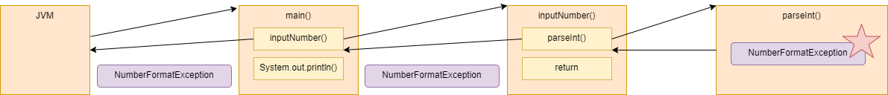

class: inverse, center, middle # Kivétel a hívási láncban --- # Több metódus ```java public class InputNumberMain { public static void main(String[] args) { int number = new InputNumberMain().inputNumber(); System.out.println(number); // 2 } public int inputNumber() { Scanner scanner = new Scanner(System.in); String input = scanner.nextLine(); int number = Integer.parseInt(input); return number; // 1 } } ``` * Hibás input esetén az 1-essel és 2-essel jelölt sor nem fut le --- # Stacktrace ```plaintext Exception in thread "main" java.lang.NumberFormatException: For input string: "abc" at java.base/java.lang.NumberFormatException.forInputString(NumberFormatException.java:68) at java.base/java.lang.Integer.parseInt(Integer.java:652) at java.base/java.lang.Integer.parseInt(Integer.java:770) at introexceptiontrace.InputNumberMain.inputNumber(InputNumberMain.java:15) at introexceptiontrace.InputNumberMain.main(InputNumberMain.java:8) ``` --- # Hívási lánc 